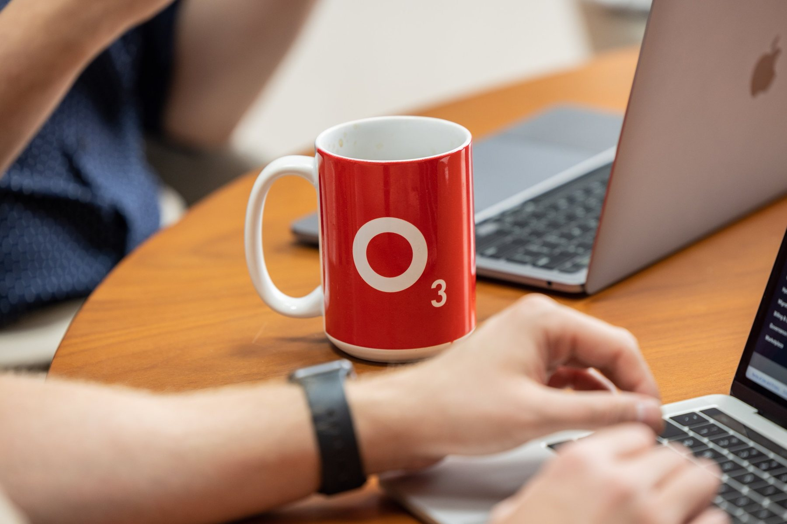
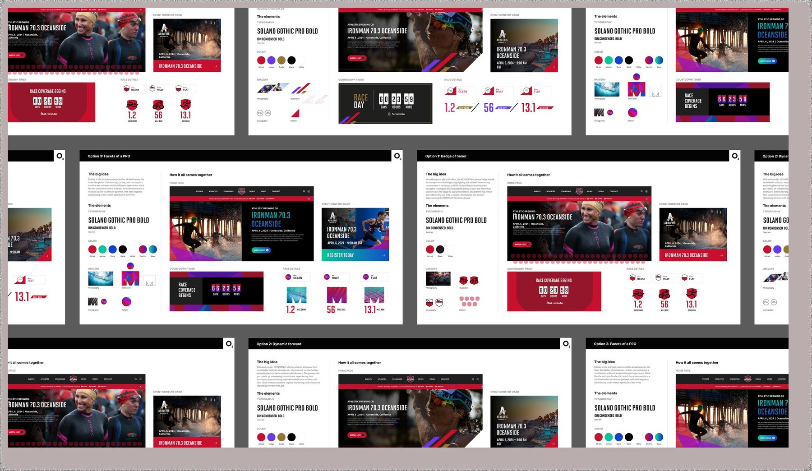
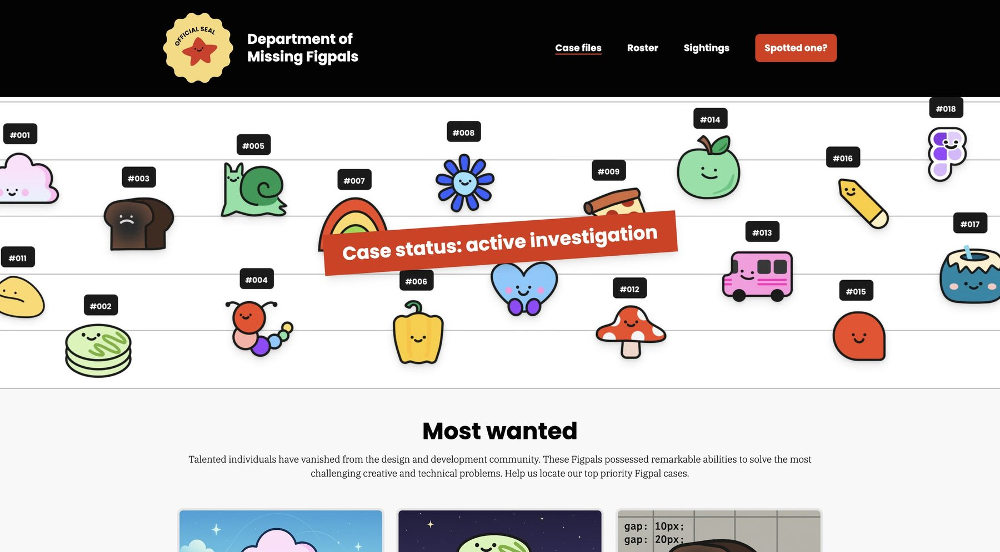
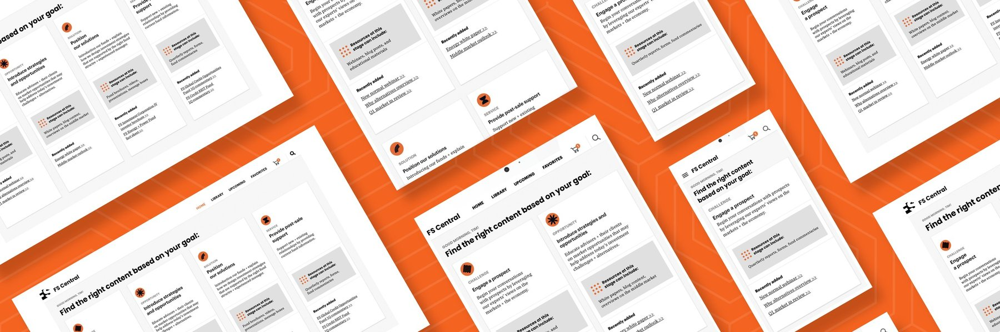
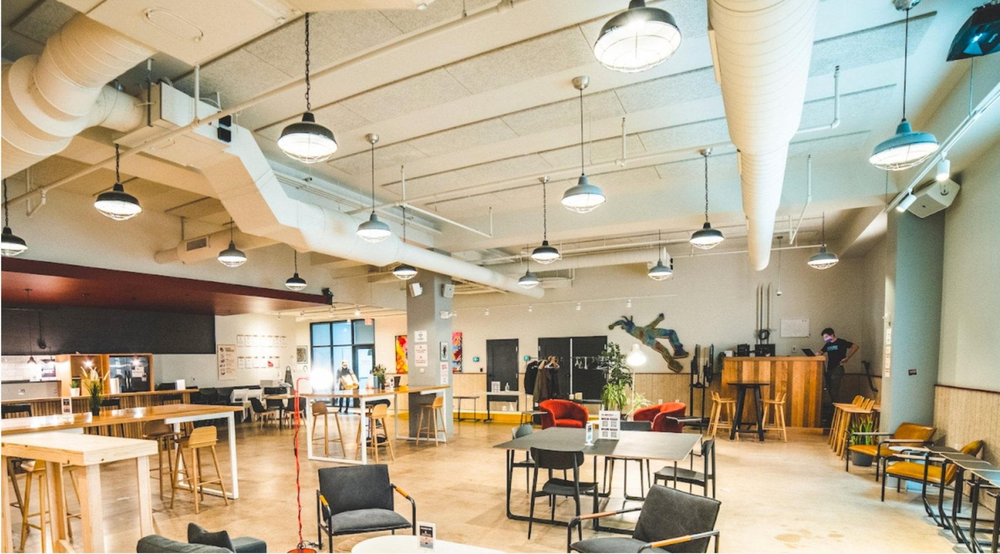
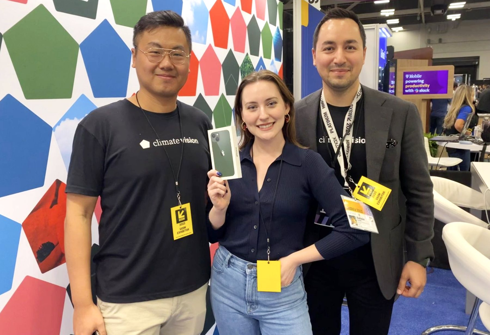
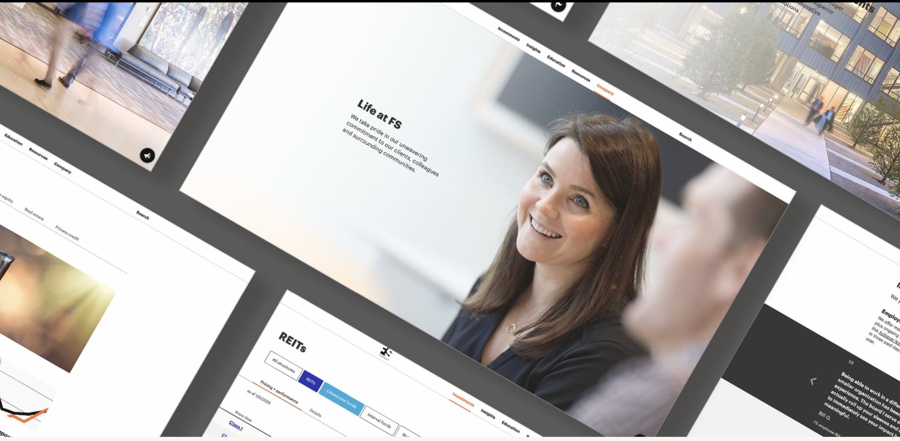
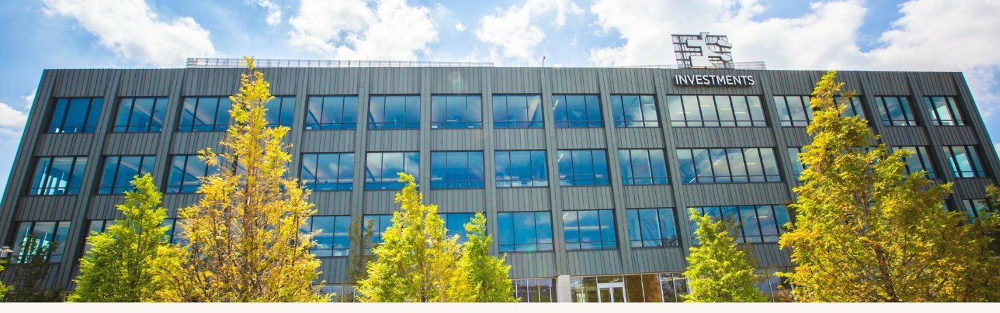

Case studies · the receipts
The work behind the resume.
Years of projects. These are the ones I'm proudest of.
Selected work
Teams, platforms, brands, and a few missing mascots.

NewRebuilding a team while it was still running.
A 40+ person consultancy, the Great Resignation, and the charter, skills matrix, and leadership program that held it together.
Read the case study
Going the distance: IRONMAN's next-generation digital experience.
A full platform transformation for a global endurance brand. 40K new users on the Pro Series site on launch day.
Read the case study
When beloved characters go missing: building the Department of Missing Figpals.
A community campaign built on craft and mischief, turning a design-tool mascot universe into an active investigation.
Read the case study
Right content, right time: powering sales success with FS Central.
Reduced content search time from five to ten minutes down to under five seconds per item.
Read the case study
Personalizing the creative gig economy.
A custom mobile app and an AI assistant inspired by REC's own Membership Director, live in under 30 days.
Read the case study
Building high-performing teams: a leadership journey.
Founding design leader at SIG and FS Investments, plus a team rebuild at O3.
Read the case study
Decoding climate risk for homes with Climate Vision.
A booth, MVP, and demo video built to stand out at SXSW. 84% task completion rate from over 200 live attendees.
Read the case study
Cohesive by design: rebuilding FS Investments' digital experience.
Multiple scattered product sites consolidated into one unified, scalable platform.
Read the case study
Building unity from complexity: a scalable global brand.
Seven product brands unified into one architecture. 300% business growth supported over the next three years.
Read the case studyCompanies I've partnered with
Good company, kept.
From healthcare systems to endurance sports, financial services to design tools. Different industries, same throughline: teams ready to let design lead.
Occasional insights. No spam, just the good stuff.
On AI-enabled design, leadership, and organizational transformation. The stuff I'd send a smart friend.